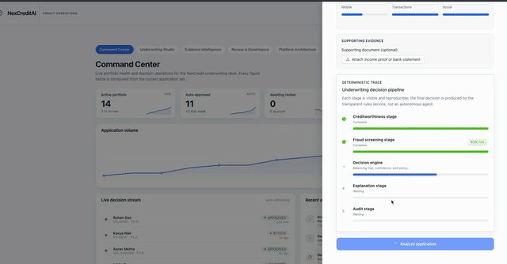
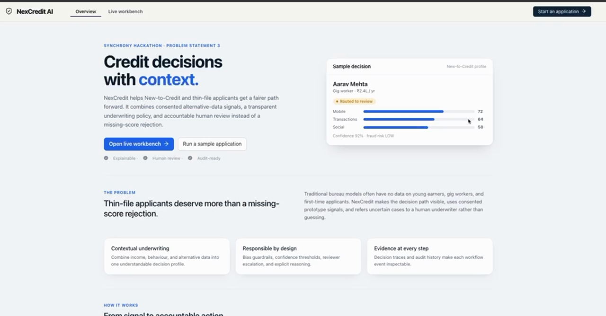
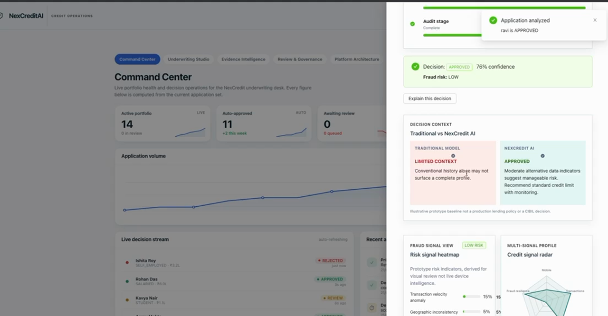
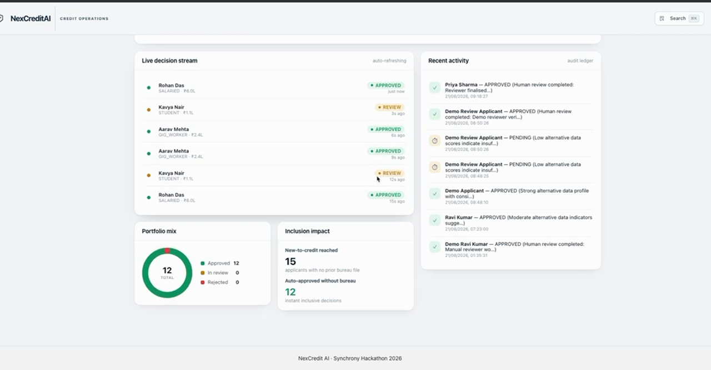
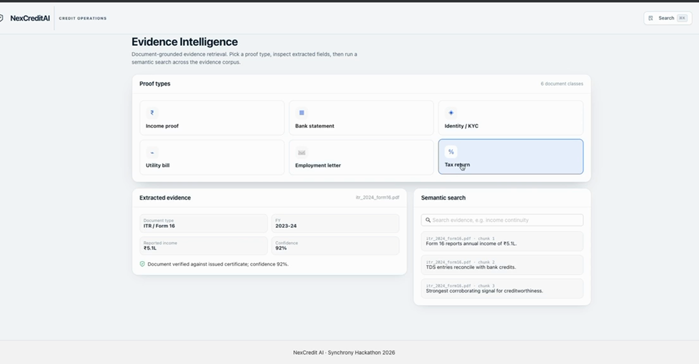
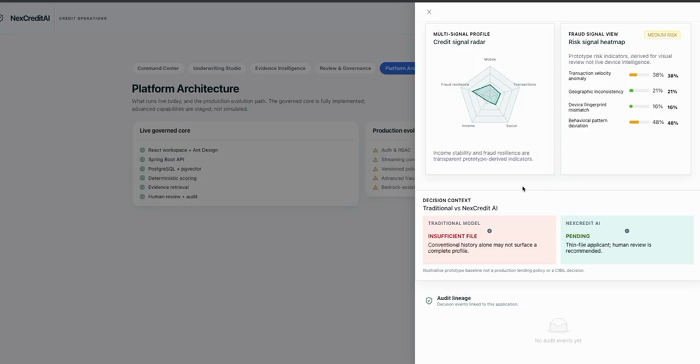
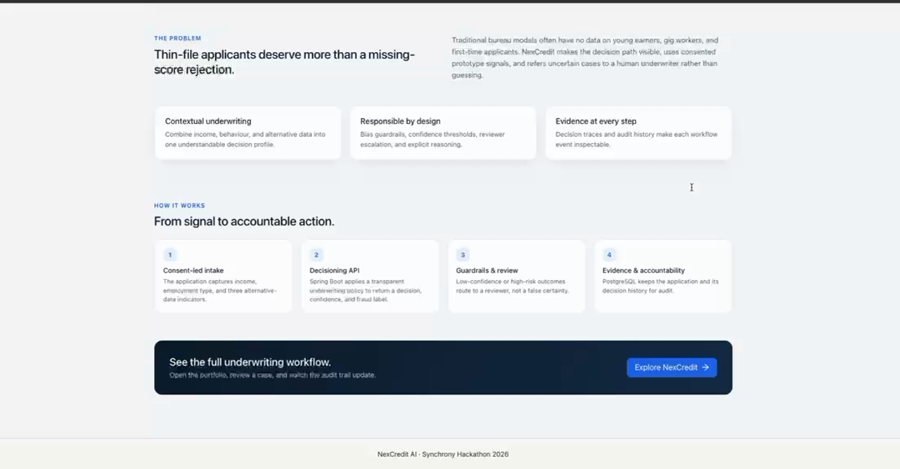

Follow the product path — why Synchrony → what PS-3 asks → how we answer → how one decision is made → how it is governed → how to run it. Every claim points to code you can open.
Short on time? Read §1 → §4 → §5 → §8 → §14 → §16. Those six pages give you the full decision trace, architecture, and governance story in under five minutes.
The engine is deterministic (no model is trained). "Stages" are a workflow visualisation, not autonomous agents. The optional OpenAI-compatible layer is off by default (nexcredit.ai.enabled=false).
This document is the technical report for NexCredit AI, submitted for Synchrony Hackathon Problem Statement 3. It is written for a reviewer who needs to understand not only what the interface shows, but also why the system was designed this way, which parts are implemented, and where the prototype deliberately stops.
Describe the product decision, the engineering choices behind it, and the evidence that the repository contains a runnable implementation rather than a static mock-up.
Synchrony hiring reviewers, credit-operations stakeholders, engineers, and responsible-AI reviewers who may inspect the source after the demo.
Claims are grounded in the current source tree, automated tests, the recorded walkthrough, and the generated roll-numbered submission archive. Synthetic applicant data is used throughout.
“Shipped” means implemented in the current code path. “Optional” means disabled unless configured. “Roadmap” means a production extension, not a claim about the current demo.

NexCredit AI is a working full-stack prototype that underwrites New-to-Credit and thin-file applicants — people a bureau scorecard would silently decline. It ingests consented alternative-data signals (mobile engagement, transaction behaviour, social signal) plus income/employment and optional document proofs, runs a fixed, inspectable scoring function, and either decides or refers to a human with the evidence needed to make the final call.
nexcredit-ui.css design systemmainSynchrony underwrites millions of store-card and co-brand applicants — many are young, first-job, or gig-economy borrowers who have no bureau footprint. A traditional scorecard returns "no hit" and the application is declined by default. That is a lost customer and a missed inclusion opportunity.
No history ≠ high risk — but without bureau data, legacy systems treat them the same. Alternative signals (consented mobile engagement, transaction behaviour, income adequacy) can separate thin-file but steady from thin-file and fragile — if the workflow is explainable and governable.
| Synchrony priority | NexCredit answer |
|---|---|
| Grow NTC approvals safely | Deterministic bands + confidence + fraud routing — approve the steady, refer the uncertain |
| Keep risk & compliance happy | Every decision is reasoned, confidence-scored, and audit-logged; age guardrail prevents auto-decline on age alone |
| Reviewer efficiency | Evidence (Tika) + semantic search (pgvector) surfaces the proof the reviewer needs — no tab-hopping |
| No rip-and-replace | Stateless REST API + Postgres — drops into existing underwriting ops as a governed workbench |
We optimised for reviewer trust, not model cleverness. A regulator and a credit-ops lead should be able to read the decision trace and defend it.
All alternative-data use is framed as consented and synthetic in this prototype — a real deployment would add explicit consent capture, retention, and right-to-explanation flows (see §16).
Synchrony PS-3: "Next-Gen Credit Intelligence — Building a Real-Time, Multi-Modal Underwriting Engine." The brief asks for a system that can assess NTC/thin-file applicants in real time, using multiple data modalities, with explainability and governance. Here's our reading and answer:
| PS-3 asks for | What it means in practice | NexCredit answer (shipped) |
|---|---|---|
| Real-time | Decision during the application session, not batch | Synchronous POST /api/credit/analyze — validated → scored → reasoned in one request |
| Multi-signal | Evidence beyond bureau: documents + behaviour | 3 alt-signals + income/employment + document proofs (Tika → pgvector search) |
| Explainable | Reviewer/regulator can read why | Per-decision reasoning string + confidence + fraud band + stage trace + Risk Radar |
| Governed | Human oversight, no silent auto-yes on uncertainty | PENDING_REVIEW routing + one-click review queue + audit_logs |
| Inclusive (NTC) | Don't punish "no history" | Banded scoring + age guardrail (under-21 rejections → human, never auto-decline on age) |
A trained risk model, bureau pulls, device/location tracking, or autonomous approval. Those would need governance that a hackathon prototype cannot credibly claim.
Age guardrail: any under-21 rejection is escalated to PENDING with PENDING_REVIEW — the system cannot reject on age alone. Verified by CreditUnderwritingBiasGuardrailTest.
Every PS-3 requirement maps to a shipped feature and a file you can open. No slide-ware.
| # | Requirement | Feature | Where to look |
|---|---|---|---|
| R1 | Real-time decision | POST /api/credit/analyze — validate → score → persist → audit → return | CreditUnderwritingService.evaluate() · CreditController |
| R2 | Alternative-data scoring | 3 alt-signals (0–100) + income/employment → banded decision, confidence, fraud band | CreditUnderwritingService · CreditApplication |
| R3 | Document evidence | Upload → Tika parse → bounded preview → vector index → search | DocumentEvidenceService · VectorStore · EmbeddingService |
| R4 | Semantic search | pgvector L2 search (<->) with token fallback | VectorStore · POST /api/credit/evidence/search |
| R5 | Explainability | Reasoning string + confidence + Risk Radar + comparison view | ExplanationService · DecisionCard · RiskRadar |
| R6 | Human-in-the-loop | PENDING_REVIEW queue + one-click approve/reject + reviewer notes | CreditController.review · WorkspacePages Review view |
| R7 | Bias guardrail | Age-based rejection → escalate to human | CreditUnderwritingService (guardrail block) |
| R8 | Audit & governance | Every analyze/review appends AuditLog; filterable timeline | AuditLogService · GET /api/audit/logs |
| R9 | Ops workbench | 5 connected views, chip nav, ⌘K palette, application drawer | WorkspacePages.js · AtlasUI.js · App.js |
| R10 | Deployable | Docker Compose (pgvector/backend/frontend) · CI · reproducible submission zip | Dockerfile · docker-compose.yml · build-submission.sh |
./mvnw test — 9 backend test classes green. cd src/frontend && npm test — App + NewComponents green. Open src/main/java/.../credit/CreditUnderwritingService.java — the entire decision function fits on one screen.
Workspace — 5 views, header (brand + search), chip nav, application & detail drawers, ⌘K palette.
Client — Client.js attaches Bearer JWT; seedData.js offline fallback.
Design system — nexcredit-ui.css + AtlasUI.js (KPI, Sparkline, Donut, Trend, LiveStream).
CreditController → CreditUnderwritingService (deterministic) → CreditApplicationRepositoryDocumentEvidenceService (Tika) → VectorStore (pgvector)JwtAuthenticationFilter (JJWT 0.12.6) · AuditLogService
Tables: credit_applications · audit_logs · document_evidence · evidence_embedding(vector 1536)
DDL auto-update. Vector index: L2 (<->) search; token fallback when disabled.
POST /api/auth/login
→ JWT (HS256, 1h)
POST /api/credit/applications
validated entity
POST /api/credit/analyze
→ decision + audit
POST /api/credit/upload
Tika → pgvector
POST /api/credit/review/{id}
human → audit
GET /api/audit/logsaudit_logs ledger
Stateless API + relational store is the simplest thing a bank can actually run and audit. pgvector lives in the same Postgres — no separate vector service to operate.
Demo uses HTTP locally; production would terminate TLS at the frontend (nginx) and run the API behind it. JWT is stateless; no session store.
Every dependency earns its place by making the system reproducible and auditable without an opaque external service.
| Layer | Choice | Version | Why it was integrated |
|---|---|---|---|
| Framework | Spring Boot | 3.3.5 · Java 17 | REST + JPA + Security in one opinionated stack; fast to audit. |
| Persistence | Spring Data JPA | — | Relational store for applications/audit; sequences for IDs. |
| Database | PostgreSQL + pgvector | 16 · 0.1.6 | Same DB for relational + vector — L2 distance (<->) without a sidecar. |
| Document parsing | Apache Tika | 2.9.2 | Local text extraction from proofs; bounded preview for reviewer evidence. |
| Security | Spring Security + JJWT | 0.12.6 | Stateless JWT (HS256, 1h); in-memory users from config — no external IdP. |
| Optional AI | OpenAI-compatible REST | — | Off by default. Embeddings + explanation drafting when enabled; otherwise local hashing + rule text. |
| Frontend | React + Ant Design + ECharts | 18 · 5 · — | Dense, professional workbench; charts for KPIs/donuts/trends. |
| Build | Maven · Lombok · JavaFaker | — | Backend build + boilerplate reduction + seed data. |
| Infra | Docker Compose · nginx | — | postgres/backend/frontend as one docker compose up. |
NEXCREDIT_AI_ENABLED=false the system uses a deterministic local embedding (hashing into a 1536-dim unit vector) and rule-based reasoning — fully functional with zero external calls. Set NEXCREDIT_AI_ENABLED=true + OPENAI_API_KEY to use a remote endpoint.CreditApplication → credit_applications| Field | Type | Constraint / note |
|---|---|---|
| id | Long (seq) | PK |
| applicantName | String | @NotBlank |
| age | Integer | @Min(18) — guardrail input |
| annualIncome | BigDecimal | income adequacy signal |
| employmentType | enum | SALARIED / GIG_WORKER / STUDENT |
| mobileUsageScore | Integer 0–100 | alt-data signal |
| transactionBehaviorScore | Integer 0–100 | alt-data signal |
| socialSignalScore | Integer 0–100 | alt-data signal |
| creditDecision | String | APPROVED / REJECTED / PENDING |
| confidenceScore | Integer | engine confidence (60–92) |
| reasoning | String(1000) | human-readable explanation |
| fraudRisk | String | LOW / MEDIUM / HIGH |
| reviewStatus | enum | AUTO_APPROVED / AUTO_REJECTED / PENDING_REVIEW |
| reviewerNotes | String(1000) | human reviewer input |
| documentPath | String(500) | uploaded proof path |
| createdAt | Timestamp | @PrePersist |
AuditLog → audit_logsid · applicationId · decision · reasoning(1000) · timestamp
Appended on every analyze and review — the compliance source of truth. Surfaced in Review & Governance as a filterable timeline.
DocumentEvidence → document_evidenceid · applicationId · originalFileName · extractionStatus · textPreview(4000) · createdAt
Produced by Tika parse. Joined to evidence_embedding(vector 1536) for search.
CreditUnderwritingService.evaluate() is a fixed function of the inputs — no weights are learned, so the same application always yields the same decision, confidence, fraud band, and reasoning. This is what makes it defensible to a regulator and an auditor.
int total = mobileUsageScore
+ transactionBehaviorScore
+ socialSignalScore;
if (mobileUsageScore < 25
|| transactionBehaviorScore < 25) {
decision = REJECTED;
confidence = 92; fraudRisk = HIGH;
} else if (total > 210
&& annualIncome > 300000) {
decision = APPROVED;
confidence = 88; fraudRisk = LOW;
} else if (total > 180) {
decision = APPROVED;
confidence = 76; fraudRisk = LOW;
} else {
decision = PENDING; // refer
confidence = 65; fraudRisk = MEDIUM;
}
// — BIAS GUARDRAIL —
if (age < 21 && decision == REJECTED) {
decision = PENDING; confidence = 60;
reasoning +=
"[BIAS GUARDRAIL: escalated to human review]";
}
// — REVIEW ROUTING —
if (confidence < 70 || fraudRisk == HIGH
|| (age < 21 && wasRejected))
reviewStatus = PENDING_REVIEW;
else reviewStatus = AUTO_APPROVED / AUTO_REJECTED;
| Condition | Decision | Conf | Fraud |
|---|---|---|---|
| any alt-score < 25 | REJECTED | 92 | high |
| total > 210 & income > 300k | APPROVED | 88 | low |
| total > 180 | APPROVED | 76 | low |
| otherwise | PENDING | 65 | med |
| Guardrail: under-21 + REJECTED → PENDING (60) · Routing: conf<70 or fraud HIGH → PENDING_REVIEW | |||
PENDING_REVIEW and wait for a human in the Review & Governance view.Reproducible, explainable on day one, low regulatory risk. If ML is introduced later it can run as shadow scoring behind this gate (see §18).
Uploaded proofs are parsed locally and made searchable. The pipeline degrades gracefully: if pgvector or the embedding API is unavailable, it falls back to token text search — the app never hard-fails.
POST /api/credit/upload
(applicationId, file)
→ store file on disk (≤10 MB)
→ DocumentEvidenceService
.extractAndStore() // Tika
→ textPreview (≤4000)
→ VectorStore
.indexEvidence(id, type, name, text)
→ EmbeddingService.embed(text)
if NEXCREDIT_AI_ENABLED && key:
POST /embeddings
(text-embedding-3-small, 1536-d)
else:
local hashing → unit vector
→ INSERT INTO evidence_embedding
(id, source, type, content,
embedding vector(1536))
ON CONFLICT (id) DO UPDATE ...
POST /api/credit/evidence/search
{ "query": "...", "k": 5 }
→ if pgvector available:
SELECT ...,
1 - (embedding <-> ?::vector)
AS score
FROM evidence_embedding
ORDER BY embedding <-> ?
LIMIT k
→ else: fallbackTextSearch()
// token-overlap scoring
Income · Bank statement · Identity/KYC · Utility · Employment · Tax. Each extracted field is shown next to the decision it supports in the Evidence Intelligence view.
| Component | When unavailable |
|---|---|
| pgvector | token text search |
| Embedding API | local hashing embed |
| Tika | bounded preview empty; decision unaffected |
Documents inform the reviewer; they never silently flip a decision.
nexcredit.vector.enabled · nexcredit.ai.enabled · nexcredit.ai.embedding-dim=1536
POST /api/auth/login → JWT (JJWT 0.12.6, HS256, 1h expiry) via AuthController.underwriter:underwriter123:UNDERWRITERadmin:admin123:ADMINapplicant:applicant123:APPLICANTJwtAuthenticationFilter validates Authorization: Bearer on each request.Client.js attaches the bearer token; the demo auto-authenticates as underwriter so the workbench always has a token (no login UI to keep the header clean).@NotBlank, @Min(18), score 0–100).uploads/ gitignored).| Secret | Source | Default |
|---|---|---|
JWT_SECRET | env | dev placeholder (replace in prod) |
DB_PASSWORD | .env (gitignored) | — (required) |
OPENAI_API_KEY | env | — (optional) |
Template: .env.example. Never commit .env.
External IdP (OAuth/OIDC), TLS termination at nginx, encryption at rest, explicit alt-data consent capture, retention & right-to-explanation flows, rate limiting, and audit export. The prototype isolates the decisioning so these can be layered without changing the engine.
UsersConfig with a real user store before launch.| Method & path | Auth | Purpose |
|---|---|---|
GET /api/health | public | Liveness probe |
POST /api/auth/login | public | {username,password} → JWT |
GET /api/credit/applications | public | List all applications |
GET /api/credit/pending-review | public | Referred queue |
POST /api/credit/applications | public | Create application (validated) |
POST /api/credit/analyze | public | Application → CreditDecision (decision + audit) |
POST /api/credit/review/{id} | UNDERWRITER/ADMIN | {decision, reviewerNotes} → reviewed |
POST /api/credit/upload | UNDERWRITER/ADMIN | multipart(file) + applicationId → parsed evidence |
GET /api/credit/evidence/{id} | public | Latest document evidence for an application |
POST /api/credit/evidence/search | public | {query, k} → semantic/text hits |
POST /api/credit/explanation | public | Application → explanation DTO |
GET /api/audit/logs | public | Full audit ledger |
POST /api/credit/analyze
{
"applicantName": "Amit Patel",
"age": 19,
"annualIncome": 150000,
"employmentType": "STUDENT",
"mobileUsageScore": 40,
"transactionBehaviorScore": 35,
"socialSignalScore": 30
}
→ {
"applicationId": 3,
"creditDecision": "PENDING",
"confidenceScore": 65,
"fraudRisk": "MEDIUM",
"reviewStatus": "PENDING_REVIEW",
"reasoning":
"Alternative data is inconclusive. "
"Recommend human underwriter review."
}
POST /api/credit/evidence/search
{ "query": "income proof salaried", "k": 5 }
→ [
{
"applicationId": 7,
"textPreview": "Salary slip ...",
"score": 0.82
},
...
]
src/frontend/src/Client.js wraps every call, attaches the JWT, and surfaces errors via Notification.js. No endpoint is called without a token except /health and /auth/login.
App.js holds all state (applications, audit, active view, drawers, ⌘K) and renders the WorkspacePages shell. Children are presentational and fed props — easy to test, easy to reason about.
| File | Role |
|---|---|
App.js | Shell, header (brand + search), state, routing |
WorkspacePages.js | 5 views: Command Center · Underwriting Studio · Evidence Intelligence · Review & Governance · Architecture |
AtlasUI.js | KpiCard · Sparkline · Donut · FilterChips · LiveStream · ActivityFeed · ProofTypeGrid · ReviewQueue · TrendChart |
CreditApplicationForm.js | Guided intake drawer → analyze → DecisionCard |
Client.js | Fetch wrapper + bearer auth |
seedData.js | 13-app offline fallback (UI never empty) |
nexcredit-ui.css | Design system — tokens, cards, nav chips, KPIs |
Light banking theme — ink #0b1d33 · accent #1a5cff · white surface · soft blue tints. No "AI-slop" tells (no blinking dots, no tracked-caps stat boxes). Single chip nav above the heading; header shows only brand + search.
App.js fetches /applications + /audit/logs on load (with seedData.js fallback). Selecting a row sets selectedApplication → inline Risk Radar + decision pill + full-drawer link. Creating an application calls POST /analyze and appends the result. Review calls POST /review/{id} and refreshes the queue. All via Client.js with JWT.
Tests: App.test.js (shell) · __tests__/NewComponents.test.js. Run: npm test.
Frames captured from the submitted demo video. The workbench is dense but calm — built for an underwriter who lives in it all day.




audit_logs row.Platform Architecture renders the system diagram and stack inside the product itself — so a reviewer or judge sees the engineering without leaving the workbench.

Command Center or landing → guided drawer (name, age, income, employment, 3 alt-scores)
Drawer calls POST /api/credit/analyze → decision card (reasoning, confidence, fraud band)
Upload → Tika parse → preview + vector index — shown in Evidence Intelligence
PENDING_REVIEW appears in Review & Governance → one-click approve/reject + notes → audit
Every step appends audit_logs — filterable timeline for ops and compliance
seedData.js (13 apps + 12 audit entries, mirrored from CreditSeedData) keeps the workbench populated — a reviewer never sees an empty state.
| Traditional | NexCredit AI |
|---|---|
| No bureau → silent decline | Alt-data → decision or refer, with reasoning |
| Single opaque cut-off | Three outcomes + confidence + fraud band |
| No human path | Uncertain/high-fraud → human review |
| Untraceable | Every event in audit_logs |
| One-size scoring | Age guardrail; employment-aware bands |
Each decision renders with its reasoning string, a Risk Radar of the three alt-signals, a fraud heatmap, and a TraditionalComparison against a bureau-only baseline — so the reviewer sees why, not just what.
| Deterministic (shipped) | ML (future) | |
|---|---|---|
| Explainable now | ✔ fixed rules | — needs SHAP/attribution |
| Reproducible | ✔ always | — seed/version dependent |
| Learns patterns | — no | ✔ yes |
| Regulatory risk | ✔ low | — requires governance |
| Time to value | ✔ day one | — data + training |
Ship deterministic, prove the workflow, then introduce ML as shadow scoring behind the same gate — with fairness testing and rollback (see §18). The workbench doesn't change; the engine gets smarter under governance.
A focused pass to make the workbench feel like a real banking product — premium, calm, and honest — not an AI demo.
| Area | What changed | Why |
|---|---|---|
| Design system | nexcredit-ui.css (tokens, cards, nav chips, KPIs) + AtlasUI.js (KpiCard, Sparkline, Donut, TrendChart, LiveStream, ActivityFeed, ProofTypeGrid, ReviewQueue) | Premium, consistent surface — no "AI-slop" tells |
| Workspace | 5 connected views with live data, charts, inline Risk Radar + decision pill on row selection | One workbench, not five disconnected pages |
| Navigation | Single chip nav above the heading; header reduced to brand + search only | Remove duplicate nav; keep chrome minimal |
| Entry | Start application in Command Center (mirrors landing) | Reviewer can start from where they work |
| Resilience | seedData.js — 13 apps + 12 audit entries mirrored from backend seed | Workbench never empty, even offline |
| Evidence | Six proof types + semantic (pgvector) / text search | Evidence next to the decision it supports |
| Governance | One-click review queue + filterable audit timeline | Human-in-the-loop, tangible |
| Report | This document — PB-3 mapping, Synchrony framing, full source map | Judge can trace any claim to code |
We did not add an autonomous agent runtime, a trained model, or a claim of "real bureau integration." The prototype is stronger for being honest about its boundary — and the roadmap (§18) shows how to cross it with governance.
| Principle | How it's enforced |
|---|---|
| Explainable, not autonomous | Reasoning string + confidence + fraud band on every decision; final approval is human when uncertain |
| Bias guardrail | Age-based rejection (<21) → PENDING_REVIEW; tested in CreditUnderwritingBiasGuardrailTest |
| No silent auto-yes | Low-confidence or high-fraud → PENDING_REVIEW, never auto-approve |
| Auditability | Every analyze/review → audit_logs (who/when/what), filterable in the product |
| Consent posture | Prototype uses synthetic, consented signals; real deployment adds explicit consent, retention, right-to-explanation |
| Graceful degradation | pgvector/LLM unavailable → local fallback; app never hard-fails |
Not a slogan. Uncertain cases appear in a review queue with the applicant's signals, reasoning, fraud band, and evidence preview. The reviewer clicks Approve/Reject + notes → the decision and notes are persisted and audit-logged. No decision is made without a trace.
| True | Not claimed |
|---|---|
| ✔ Deterministic, explainable | ✘ Trained production risk model |
| ✔ One visualised workflow (5 stages) | ✘ Autonomous multi-agent runtime |
| ✔ Local fallback, no model required | ✘ Remote LLM always-on |
| ✔ Score-based fraud routing | ✘ Device/graph/velocity detection |
cp .env.example .env # set POSTGRES_PASSWORD docker compose up --build # postgres :5433 backend :8081 # frontend :3001 open http://localhost:3001
# Terminal 1 — Postgres + pgvector docker run -e POSTGRES_USER=admin \ -e POSTGRES_PASSWORD=admin \ -e POSTGRES_DB=creditdb \ -p 5433:5432 pgvector/pgvector:pg16 # Terminal 2 — Backend export DB_PASSWORD=admin ./mvnw -P'!bundle-backend-and-frontend' \ spring-boot:run # :8081 # Terminal 3 — Frontend cd src/frontend && npm install npm start # :3000 → proxies to :8081
Demo account (auto-used): underwriter / underwriter123 · Seed: 13 apps + 12 audit entries via CreditSeedData.
# Backend — JUnit 5 (9 classes)
./mvnw test
# Frontend
cd src/frontend
npm test # App.test.js
# __tests__/NewComponents.test.js
CI=true npm run build # production build
| Var | Default | Note |
|---|---|---|
DB_PASSWORD | — | required (via .env) |
JWT_SECRET | dev placeholder | replace in prod |
NEXCREDIT_AI_ENABLED | false | remote embeddings/explanations off |
NEXCREDIT_VECTOR_ENABLED | true | pgvector search |
OPENAI_API_KEY | — | optional, when AI enabled |
bash build-submission.sh # → submission/SE23UCSE065.zip # validates MP4, excludes secrets/ # build artefacts, deterministic zip bash test/build-submission-test.sh
pom.xml | Maven — Spring Boot 3.3.5, pgvector, JJWT, Tika, tests |
Dockerfile | Multi-stage: maven:3.9-temurin-17 → eclipse-temurin:17-jre |
docker-compose.yml | postgres(pgvector) :5433 · backend :8081 · frontend :3001 |
build-submission.sh | Roll-numbered ZIP (validates MP4, excludes secrets) |
.github/workflows/build.yml | CI: JDK 17 · ./mvnw test |
README.md | Product overview + run instructions (public face) |
docs/architecture.md | Deep-dive architecture & decision lifecycle |
submission/SE23UCSE065/ | Graded package: this PDF (source report.html) + MP4 + screenshots |
src/main/java/com/synchrony/nexcredit/src/frontend/src/The workbench is the stable surface. The engine evolves underneath it — with governance at each step.
Deterministic today, learned tomorrow — under the same workbench. The UI doesn't change when the engine gets smarter; governance does.
| Artefact | What it is |
|---|---|
| SE23UCSE065.pdf | This report — architecture, integration, source map, decision trace, governance. Source: submission/SE23UCSE065/report.html. |
| SE23UCSE065.zip | Recorded MP4 walkthrough + current frontend/backend source. Secrets and build artefacts excluded; ZIP is deterministic. |
| SE23UCSE065.mp4 | Demo video inside the ZIP (also at submission/SE23UCSE065/SE23UCSE065.mp4). |
| GitHub | github.com/hrishikesh-reddi/synchrony-nexcredit — branch main, CI green. |
unzip -l submission/SE23UCSE065.zip | head ./mvnw test cd src/frontend && npm test docker compose up --build # :3001
Gavinolla Hrishikesh Reddy — SE23UCSE065
Mahindra University · B.Tech CSE · Hyderabad
github.com/hrishikesh-reddi · linkedin.com/in/gavinolla-hrishikesh-reddy-b3b800277
Built for Synchrony PS-3 · Next-Gen Credit Intelligence
Technologyinterns@syf.com
Per hackathon instructions — ZIP + PDF to the Synchrony technology interns mailbox.
All screenshots in this report are frames from the submitted MP4. The MP4 is the primary demo artefact; the report's strips keep the PDF portable.